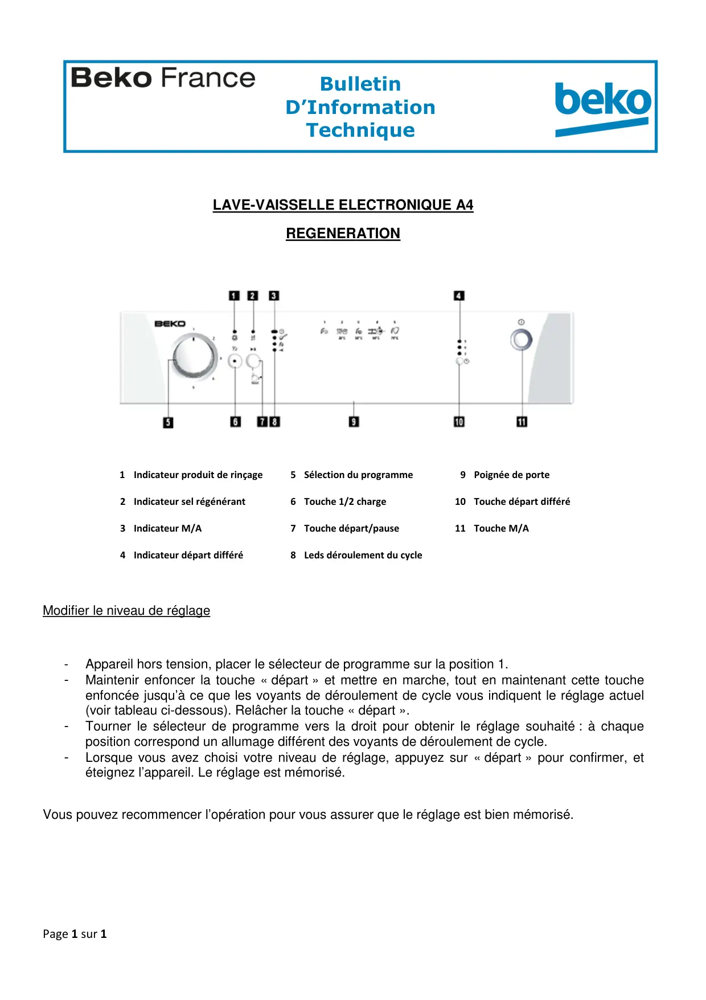

Régénération lave vaisselle A4

Page 1 sur 1BulletinD’InformationTechniqueZA de la Voûte73650 PETIT COURONNE01.58.34.46.46LAVE-VAISSELLE ELECTRONIQUE A4REGENERATION1Indicateur produit de rinçage5 Sélection du programme9 Poignée de porte2 Indicateur sel régénérant6 Touche 1/2 charge10 Touche départ différé3 Indicateur M/A7 Touche départ/pause11 Touche M/A4 Indicateur départ différé8 Leds déroulement du cycleModifier le niveau de réglage-Appareil hors tension, placer le sélecteur de programme sur la position 1.-Maintenir enfoncer la touche « départ » et mettre en marche, tout en maintenant cette toucheenfoncée jusqu’à ce que les voyants de déroulement de cycle vous indiquent le réglage actuel(voir tableau ci-dessous). Relâcher la touche « départ ».-Tourner le sélecteur de programme vers la droit pour obtenir le réglage souhaité : à chaqueposition correspond un allumage différent des voyants de déroulement de cycle.-Lorsque vous avez choisi votre niveau de réglage, appuyez sur « départ » pour confirmer, etéteignez l’appareil. Le réglage est mémorisé.Vous pouvez recommencer l’opération pour vous assurer que le réglage est bien mémorisé.
1 / 1